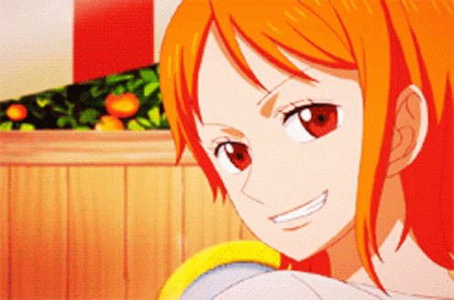
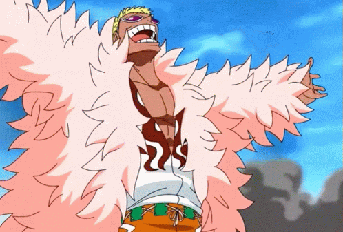

Postacie z One Piece
Monkey D. Luffy
Główny bohater One Piece. Jest założycielem i kapitanem niesławnej i potężnej załogi Słomkowego Kapelusza, a także jej najsilniejszym wojownikiem. Jego życiowym marzeniem jest zostanie królem piratów

Roronoa Zoro
Szermierz, główny wojownik oraz numer dwa załogi Słomkowego Kapelusza i były łowca głów. Urodził się w wiosce Shimotsuki jako syn Roronoa Arashiego i Tery.

Vinsmoke Sanji
Pirat, kucharz oraz numer cztery załogi Słomkowego Kapelusza, a także były wiceszef restauracji Baratie. Jest trzecim synem rodziny Vinsmoke, co czyniło go królewiczem Królestwa Germy, póki nie wyrzekł się swego rodu

Nami
Nawigatorka załogi Słomkowego Kapelusza. Jest trzecim członkiem załogi i drugą osobą, która dołączyła do Luffy'ego. Jest przyrodnią siostrą Nojiko. Obie to sieroty wychowane przez Belle-mere.
Donquixote Doflamingo
Kapitan załogi Donquixote, były królewski wojownik mórz ze zniesioną nagrodą za głowę w wysokości 340,000,000, najbardziej wpływowy broker półświatka działający tam pod pseudonimem "Joker", a także były członek światowej arystokracji wywodzący się z rodziny Donquixote. Obecnie uwięziony jest w Impel Down.
